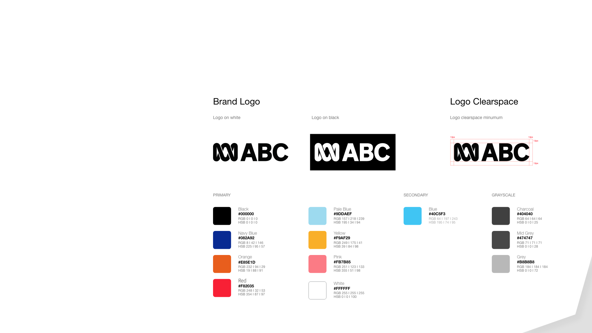

Research
Heuristic Evaluation
A heurisitic evalution of the current ABC website allowed us to better understand which UI elements were working, and which could be improved.
The Good
Consistency of Standards
Website incorporates familiar iconogrpahy for a reduced cognitive load.
Help and Documentation
Vast range of help documentation found across all interfaces.
The Not So Good
Aesthetic and Minimalistic Design
Overall very cluttered with content chunking competing for user attention. Website incorporates unique standarsd across each interface, and seemed disconnected from a branding perspective.
User Control and Freedom
Unclear how to naviagte back to the homepage as logos don't take users back. Needs better signposting and exit functionality.
Heuristic Analysis
Research
Usability Testing
Goals
To gain insights into current user flow and system performance, as well as identify areas for improvement within the navigation and over the key interfaces of the website.
User Interview Questions
Participants
5 x current users of the ABC website and people who are searching for specific topics on the platform.
Testing Insights
No. 1
Homepage was too cluttered, and content chunking was overwhelming users. Different items were competing for user attention. Could user overall simplifying for better comprehension and user experience.
No. 2
Navigation was inconsistent across the platform. Users could not navigate back to the ABC homepage, and were quite confused and lost when attempting to do so.
Definition & Synthesis
Hello, Simon.
Name: Simon Baker
Age: 45
Personality:Active, eco-conscious, left-leaning, thoughtful.
Occupation:Social Worker
Relationship Status:Defacto relationship, no kids
Location:Melbourne
Behavioural Demographics
Likes:Eating at his local cafe, jogging, reading, gardening.
Loves:Coffee, travelling
Doesn't Like:Social inequality, commercial TV
Does:Take an active interest in current affairs, discusses politics with his friends and partner and checks the news every morning.
Goals & Needs
Needs to:
Wants to:
Pain Points & Potential Solutions
Pained when:
Potential Solution is:
Needs to:
Definition & Synthesis
Information Architecture & Card Sorting
Card sorting provided an analysis on the current structure, and highlighted where we could improve the information architecture.
Areas for improvement include:
IA Analysis
Revised Site Map
UI Style Guide Development
The Brand
Tone of Voice
Ideation
UI Style Guide Development
Style Guide
Ideation
UI Style Guide Development
Style Guide
Prototyping
The wireframe designs underwent several iterations for optimal use.
Prototyping
UI Application

Testing & Iterating
Insights
Mobile
Users prefered to use either the hamburger menu or the top sliding navigation bar, but not both.
Desktop
Users didn't instantly notice the dropdown meny arrows. Dropdown men arrows needed to be increased in size and filled with colour.
Users wanted a better allocation of colour blocking across the top navigation.
Final Prototypes
Desktop Prototype
Final Prototypes
iPad Prototype
Mobile Prototype
Final Thoughts
In the essence of reflection, this project enabled me to better understand our users. Deeply empathizing with their needs was critical in ascertaining how best to iterate on the current website.
There were great improvements made, however with further and broader testing and iterating, the final product can be improved even more.